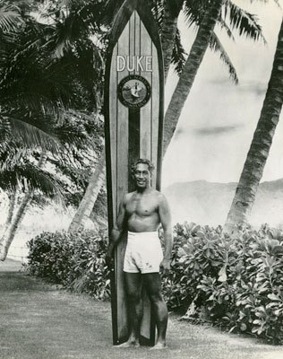

A history of surfing
Introduction
In Polynesian culture, surfing was an important activity. Modern surfing as we know it today is thought to have originated in Hawaii. The history of surfing in Hawaii refers back to the 4th-century CE where Polynesians began to make their way to the Hawaiian Islands from Tahiti and the Marquesas Islands. They brought many of their customs with them including playing in the surf on Paipo (belly) boards. It was in Hawaii that the art of standing and surfing upright on boards was invented.[2] Various European explorers witnessed surfing in Polynesia. Surfing may have been observed by British explorers at Tahiti in 1767. Samuel Wallis and the crew members of HMS Dolphin were the first Britons to visit the island in June of that year. Another candidate is the botanist Joseph Banks[3] who was part of the first voyage of James Cook on the HMS Endeavour, arriving on Tahiti on 10 April 1769. Lieutenant James King was the first person to write about the art of surfing on Hawaii, when he was completing the journals of Captain James Cook (upon Cook's death in 1779).
Profiles
duke kahanamoku